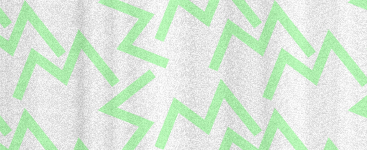

MAPA INTERATIVO
OS TEATROS
Os dois primeiros estão localizados no Espaço Cultural em Tambauzinho. Já os outros, espalhados pelo Centro da cidade.

Paulo Pontes
Endereço: R. Abdias Gomes de Almeida, 800 – Tambauzinho
Santa Roza
Endereço: Praça Pedro Américo, S/N – Centro


MAIS LOCAIS
Demais localidades pela cidade onde ocorrem eventos da MARTE.
PATROCÍNIO


REALIZAÇÃO


APOIOS


Design adaptado a partir de tema da W3layouts. Site escrito por Guilherme Santos